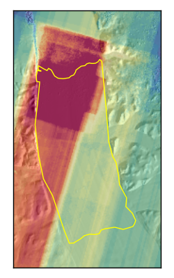
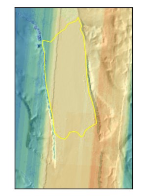
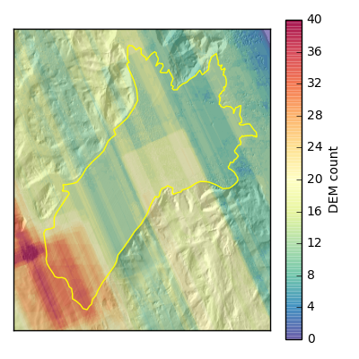
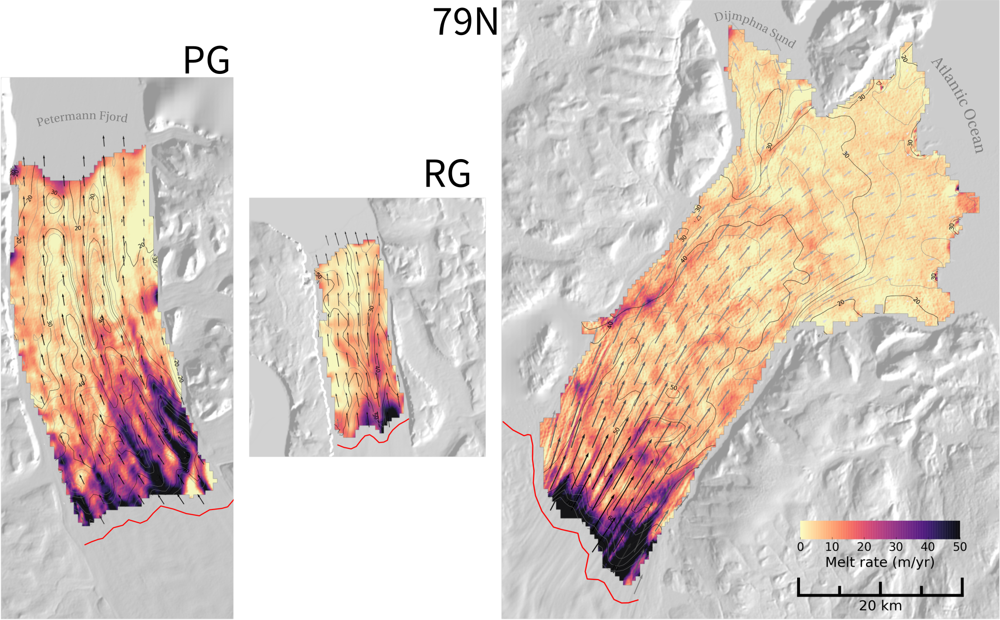
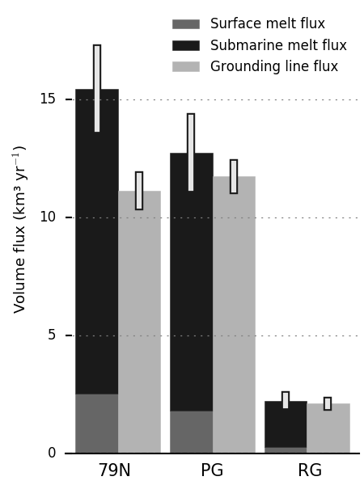
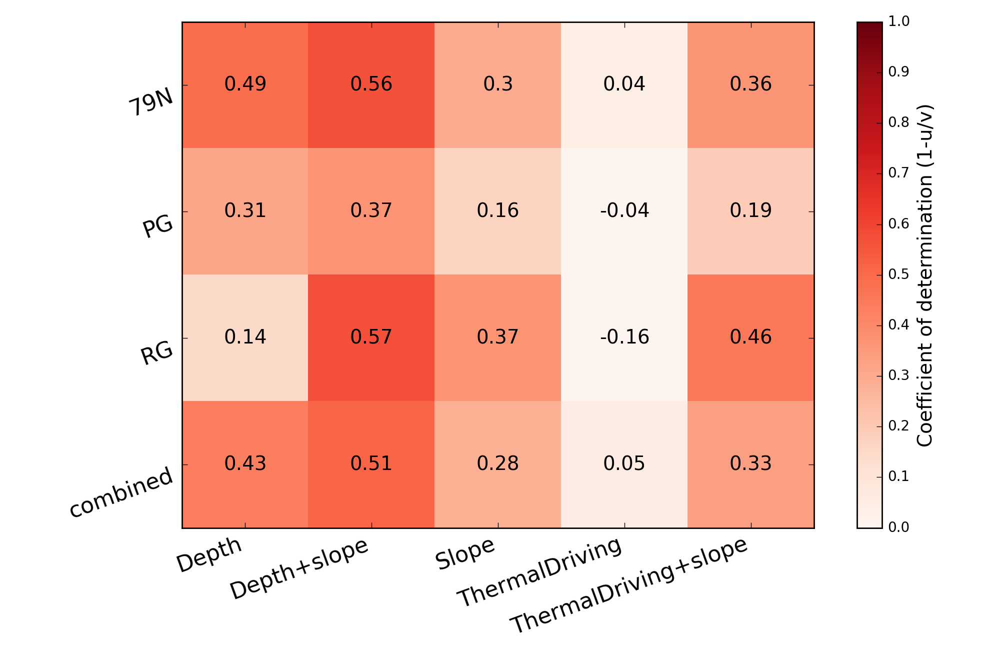
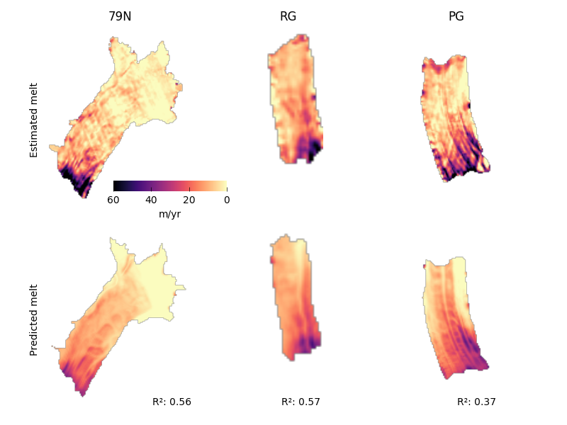
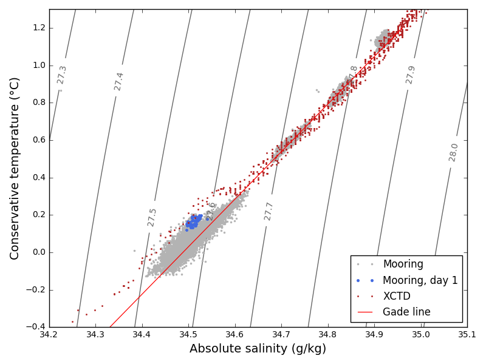

Thesis Committee Update
December 19, 2016
Outline
- Estimating submarine melt rates (wrapping-up)
- 79North mooring installation (started August)
Submarine melt rates
Recap: mass continuity
$$ \frac{Dh}{Dt} + h\nabla\cdot\vec{u} + \dot{h}_\text{firn} = \dot{m}_\text{subaerial} + \dot{m}_\text{submarine} $$ \begin{eqnarray*} \text{rate of thickness change}\\ \text{+ ice shelf spreading}\\ \text{+ firn density changes}\\ \text{= melting} \end{eqnarray*}Require measurements of thickness ($h$) and velocity ($\vec{u}$)
Thickness: WorldView DEMs
Digital Elevation Models (DEMs) constructed by exploiting Ames Stereo Pipeline (Moratto, 2010)
Using all cloud-free WorldView-1/2/3 imagery from the PGC for northern Greenland ice tongues, 2011—2015
Initially running on lab computers at WHOI; transitioned to a cluster at MIT
Thickness: coverage
  Left to right: Petermann, Ryder, 79North
DEM co-registration
Two-pass grid registration
- DEMs initially registered to GIMP DEM (Howat et al. 2014) over bedrock pixels
- Then re-registered to the mean values of all WorldView DEMs over bedrock pixels
Final bedrock pixel error ~0-3 meter
Velocity derived from feature tracking
Used for Dh/Dt and $h\nabla \vec{u}$ terms
Compute correlation between image chips in the spirit of imcorr (Scambos et al. 1992)
Average correlations at multiple resolutions to reduce noise
Use MEaSUREs velocity data (Joughin et al. 2010) as an initial guess to accelerate processing
Dh/Dt uncertainty from jackknife resampling
- Time-averaged Dh/Dt uncertainties typically 2—4 meters/year
- Higher in regions of few observations or poor grid co-registration
Surface mass balance
Using RACMO2.3 data (Noel et al. 2015)
Single surface balance estimate per glacier in space, monthly time resolution
Probably one of the least-well constrained components of the total mass balance
Results: submarine melt rate
Glacier-wide mass balance
Melt parameterizations
Motivation
Would like to relate estimated melt rates to observed ice tongue geometry and ocean conditions in order to inform melt rate predictions
Approach
Attempt to fit linear models to observed ice tongue draft, basal slope, and far-field thermal driving
Melt parameterizations: features
- Thermal driving: difference between the ambient temperature and the local freezing temperature
Using measurements from ice tongue cavity (PG / 79N) and offshore (RG) - Slope: may be correlated with melt water plume speed; should drive faster melt due to increased entrainment of ambient ocean water
- Depth: proxy for changing freezing temperature, rising ambient temperature, and proximity to the grounded glacier

Melt parameterizations: results
Melt parameterizations: depth and slope
79North mooring installation
New time series of ice tongue cavity properties
Some evidence for an eastward heatflux at depth
Some evidence for an eastward heatflux at depth
Observed water properties
Loss of anchor?
Sea ice ridging?
Current questions
- How are heat fluxes varying in time (seasonally or in relations to offshore conditions)?
- What changes can we attribute to ice-ocean interactions?
Future plans
- Since November, taking personal time away from Joint Program
- Currently working on mooring data, which I'm interested making widely-accessible
- Returning to full-time research when possible?